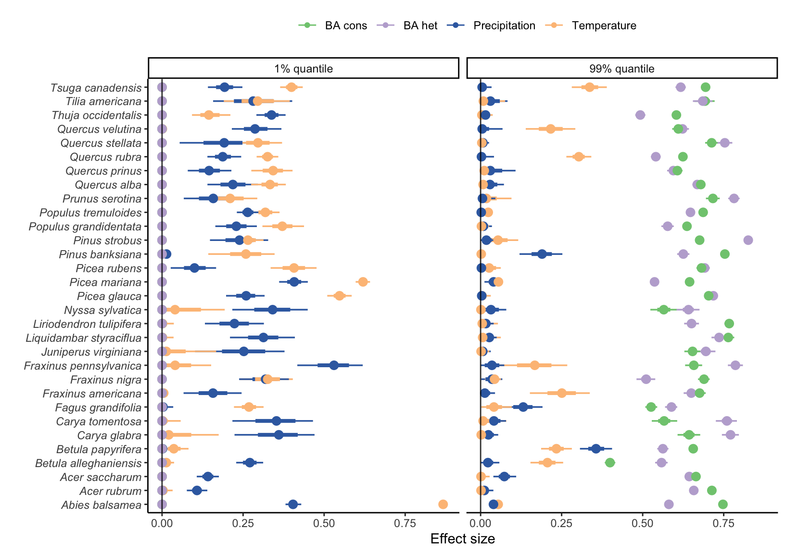
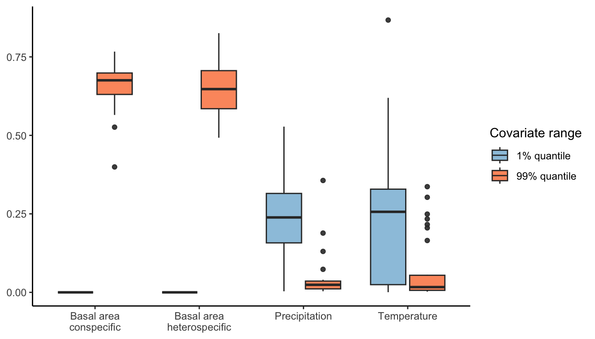
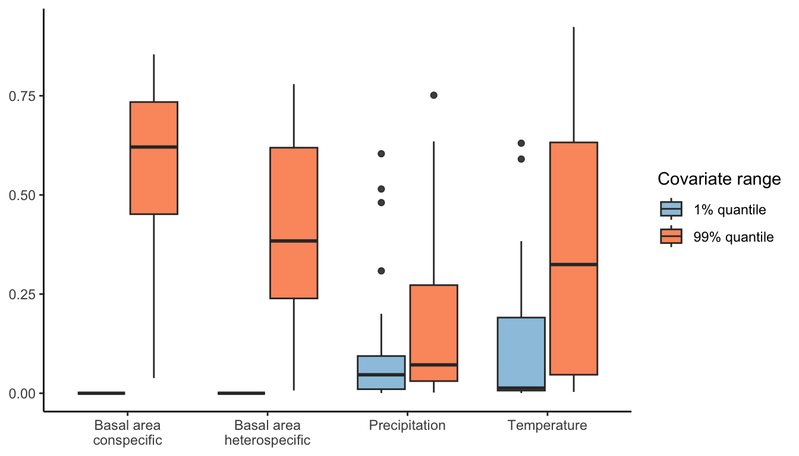
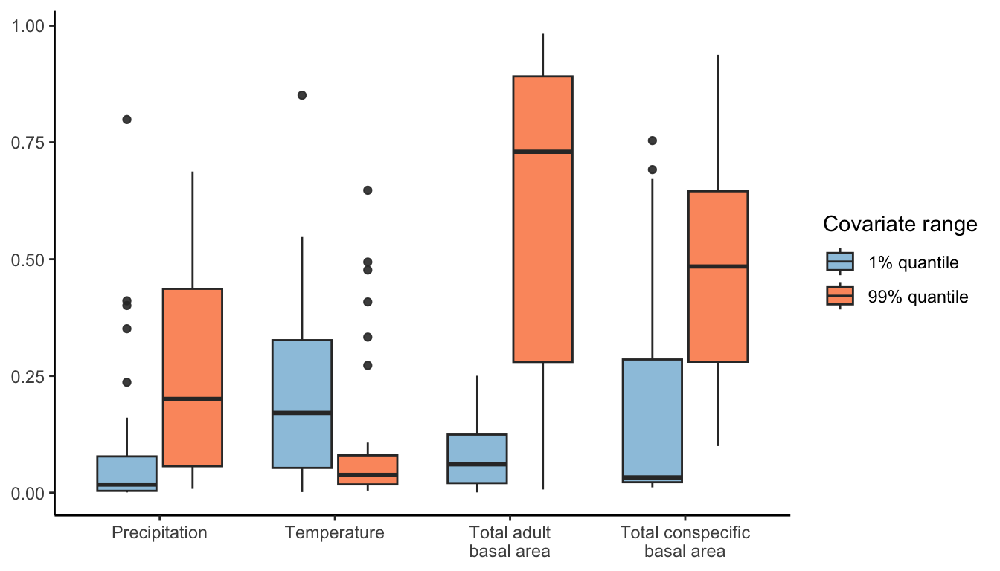
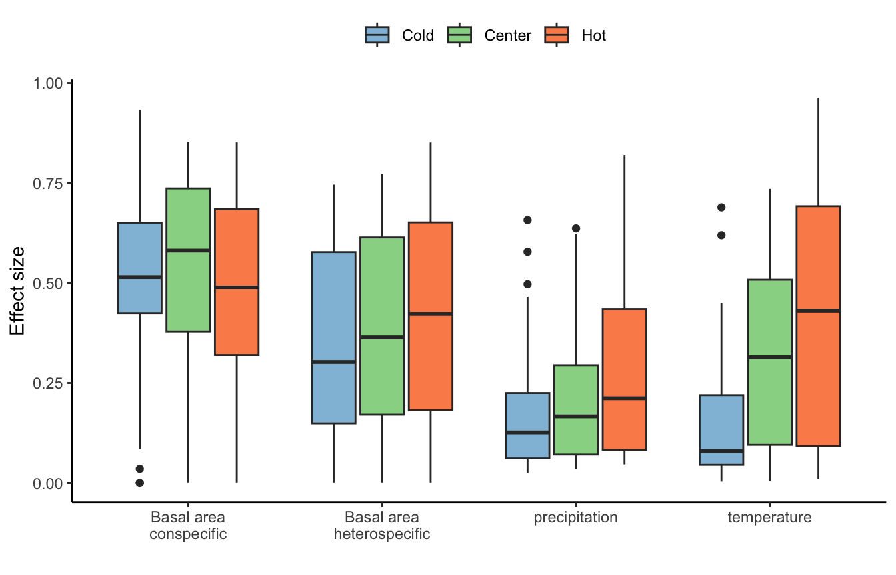

12 Conditional effect of covariates
In this section, we quantify the relative effect size of each covariate (competition conspecific, competition heterospecific, temperature, and precipitation) on the intercept of each vital rate function. Because of the functions’ non-linearity, we evaluate each covariate’s condition effect at the covariate-species combination’s lower and upper observed values. For instance, the conditional effect of annual mean temperature on the growth rate of species \(x\) is evaluated at both the 1th and 99th quantile of annual mean temperature that species \(x\) was observed. Here I define conditional effect size, or simply effect size, as the relative reduction of the intercept parameter. This means that when we compare the conditional effect size between species, those effects do not account for the intercept value or the other covariates. The conditional effect size is between 0 and 1, where 0 means no effect on the intercept.
The idea behind measuring the conditional effect of the covariate at lower and upper observed conditions is to assess the range of effects observed by each species for the specific covariate. While this metric allows us to identify the range observed effect size of the covariate, it does not account for the total distribution of observed covariates. For instance, the observed temperature distribution for a specific species can be highly concentrated at the average. While the conditional effect of temperature is relatively high at the lower border, it is not representative of the total population. In the next chapter (Chapter 13), we discuss the marginal effect of each covariate averaged across all observations, called the Average Marginal Effect. This metric better accounts for the total observed distribution of the covariates and gives more weight to locations where data is concentrated.
In this chapter, we first compute the conditional effect size at lower and upper-range conditions for each covariate-species combination. Second, we visualize the conditional effect size under harsh conditions by selecting the highest effect size between the lower and upper conditions. Finally, we split each species-specific population into the lower, center, or upper range position following the latitude distribution of each plot ID, where the range is defined as plots having their latitude lower or upper than the 10% or 90% latitude quantile distribution, respectively.
Conditional effect size at lower and upper covariate range
Growth


Survival

Recruitment

Effect size at harsh condition
Harsh condition is defined here as the extreme observed covariate with the largest conditional effect size between the 1% and 99% quantile distribution of the covariate.
Effect size at harsh condition grouped by range position
Now, we using the effect size from the harsh condition (the lower or upper covariate quantile), we divide the effect size between three regions using the mean annual temperature (MAT) gradient: cold range (MAT < 10%), hot range (MAT > 90%), and the center otherwise.
Growth
Survival
